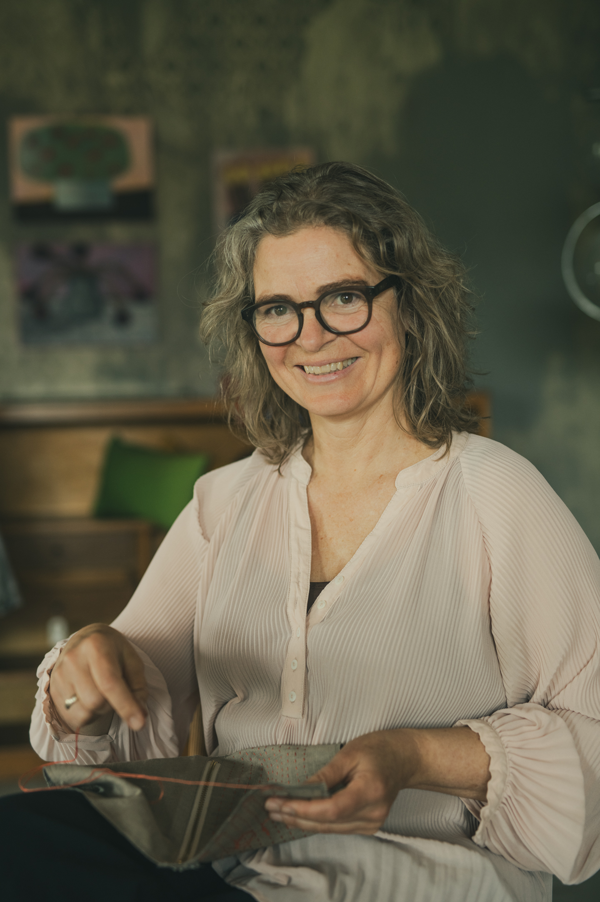

Psykomotorisk terapeut
Jeg arbejder ud fra krop og psyke som hører sammen — ikke som to adskilte spor.
Craft psykologi · psykomotorisk terapi · tekstil og håndværk
Jeg hjælper arbejdspladser, fagpersoner og organisationer med at bruge craft psykologi som en konkret vej til ro, nærvær, flow og stærkere mentale fællesskaber.
Med mere end 25 års erfaring som psykomotorisk terapeut, underviser og tekstil kreatør bygger jeg bro mellem håndværk, psykologi og sundhedsfremmende praksis.


Dorte Wahlberg Feil har undervist, faciliteret og skabt forløb for både organisationer, kulturinstitutioner og fællesskaber.
Fra sundhed og kultur til fællesskaber og læringsrum.
Et roligt fagligt fundament — med plads til sansning, krop og det, der skabes med hænderne.
Jeg arbejder ud fra krop og psyke som hører sammen — ikke som to adskilte spor.
Håndværk og skabende processer er en naturlig del af min måde at formidle på.
I krydsfeltet mellem krop, psyke, håndværk og læring — i praksis, ikke kun i teorien.
Specialiseret i, hvordan skabende arbejde kan støtte ro, nærvær og mental sundhed.
Oplæg, forløb og undervisning tilpasset jeres kontekst — altid med sans for både faglighed og det menneskelige.
Oplæg om craft psykologi, trivsel, stressforebyggelse og sammenhængen mellem krop, psyke og håndværk.
Sanselige og praktiske forløb, hvor deltagerne arbejder med hænderne og mærker, hvordan skabende processer kan skabe ro, flow og fordybelse.
Undervisning i, hvordan craft psykologi kan bruges i pædagogisk, terapeutisk, sundhedsfaglig eller organisatorisk praksis.
Dorte Wahlberg Feil er psykomotorisk terapeut, underviser og tekstil kreatør med mere end 25 års erfaring i krydsfeltet mellem krop, psyke, håndværk og læring.
Hun arbejder med craft psykologi som en sanselig og praksisnær tilgang til trivsel, ro og mental sundhed. Gennem håndværk, fordybelse og skabende processer hjælper hun mennesker og organisationer med at finde mere nærvær, flow og kontakt til kroppen.

Når hænderne arbejder, får hovedet ro.
Craft psykologi handler om den gavnlige virkning, der kan opstå, når vi arbejder skabende med hænderne. Gennem håndværk, materialer og fordybelse kan mennesker opleve mere ro, nærvær, flow og mental balance.
Hos mig bliver teorien ikke kun forklaret. Den bliver mærket.
”Dorte er et mægtigt fyrtårn i Craft-psykologi og på det psykomotoriske felt – og sikke en kraftfuld kombination!”
Som psykomotorisk terapeut med +20 års erfaring kender jeg mit fag og ved en del om nervesystemets finurlige krumspring. Alligevel efter stress, sygemelding og tænderne solidt plantet i gulvtæppet, havde jeg alligevel åndsnærværelse nok til at melde mig til en søndag med Craft og Dorte.
Det var som at lande i en varm lomme af nærvær og varme og kan klart anbefales, hvis man er et sted i livet, hvor man trænger til en håndgribelig form for kontakt til sig selv og verden.
Håndens arbejde – det taktile – det sanselige – det unyttige som Dronningen talte om i 2017 – dét er vejen frem og hjem”.